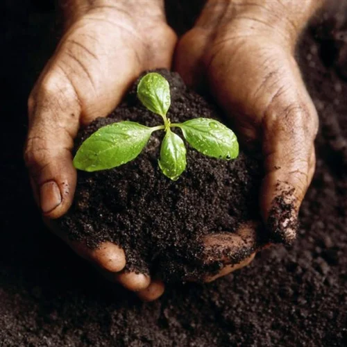
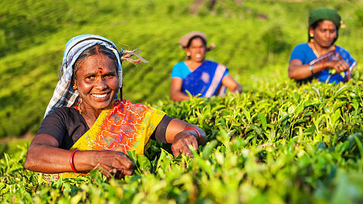

Welcome to Postik: Empowering Farmers with Quality Manure
Postik is committed to delivering high-quality manure aimed at enhancing agricultural productivity. Our mission centers on supporting farmers by providing nutrient-rich manure that fosters healthier soil and more abundant crop yields. We understand the critical role that well-balanced soil plays in successful farming, which is why our products are designed to replenish essential nutrients and improve soil structure. By using Postik manure, farmers can expect not only an increase in yield but also a boost in the overall health of their crops.
We believe in sustainable farming practices that benefit both the environment and the farming community. Our manure is produced through environmentally friendly processes that recycle organic waste into valuable agricultural inputs. This approach not only reduces waste but also minimizes the need for chemical fertilizers, promoting a greener future for agriculture.
Our Vision
At Postik, we are dedicated to transforming agriculture through high-quality manure that enhances soil health and boosts crop yields. Our commitment to sustainable farming practices not only supports farmers but also promotes a greener future for all.
Our Offerings
Premium Manure: Our nutrient-rich manure is carefully processed to ensure it delivers the essential elements your soil needs. It’s perfect for all types of crops, helping you achieve better growth and higher yields. Sustainable Solutions: By choosing Postik, you're supporting environmentally friendly farming practices. Our manure production recycles organic waste, reducing the reliance on chemical fertilizers and supporting a healthier planet. Farmer Support: We are committed to the success of our farming community. Our team offers guidance and support, helping you get the most out of our products and achieve sustainable agricultural success.